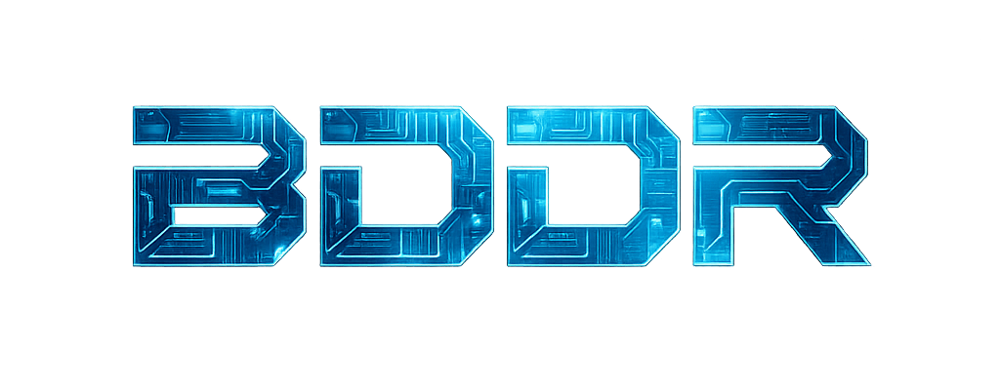
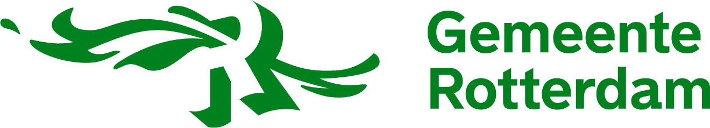
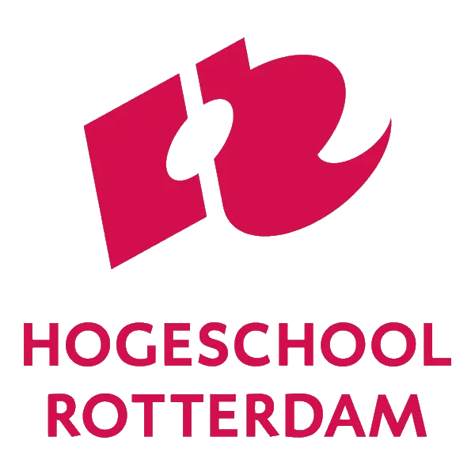

Project Hybride wereld
Welkom bij onze one-pager website!
Hier presenteren we in een oogopslag wie we zijn, wat we doen en gedaan hebben en waar we
naartoe willen.
Elke sprint geven we op dit platform een update over onze voortgang, uitdagingen en inzichten.
Dit is te zien in onze tijdlijn.
De leden van Team BDDR (Build Digital Design Right)

Context
Ons doel is het vergroten van burgerparticipatie en kennis over Rotterdam, door gebruik te
maken van beschikbare stedelijke data, die momenteel nog niet volledig wordt benut binnen de
Citiverse.
Ons doelgroep zijn nieuwe inwonenden van Rotterdam, maar eigenlijk iedereen die Rotterdam
beter wil leren kennen.
We starten dit project nu, omdat de Gemeente Rotterdam is nu in de opstart fase van de Citiverse,
hierbij kunnen wij hen goed ondersteunen door ideeën over de Citiverse uit te wisselen en
een pilot neer te zetten, die ze eventueel later kunnen uitbreiden.
De huidige situatie
- De Gemeente Rotterdam is zelf nog aan het uitvogelen wat de Citiverse gaat inhouden.
- Er wordt nog te weinig gebruikt gemaakt van data die de Gemeente van Rotterdam bezit.
- Er is nog te weinig samenhang tussen burgers van Rotterdam en de stad Rotterdam.
De gewenste situatie
- We willen een eindproduct dat functioneel werkt en aantoonbaar de burgerparticpatie en kennis van Rotterdammers vergroot.
- Het moet een webapp spel zijn die functioneel vergelijkbaar is met GeoGuessr, maar een uitbreiding heeft met Rotterdamse databronnen en een focus enkel op Rotterdamse gebieden.
- We meten ons succes door te testen en valideren bij gebruikers van ons spel, ook vinden we onze eigen leercurve en plezier tijdens dit project belangrijk om te meten.
Tijdlijn
Onze voortgang per sprint
Sprint 1
Begin maart 2026
Toekomstige update
Informatie volgt.
Sprint 2
Eind maart 2026
Toekomstige update
Informatie volgt.
Sprint 3
Begin april 2026
Toekomstige update
Informatie volgt.
Sprint 4
Eind april 2026
Toekomstige update
Informatie volgt.
Sprint 5
Begin mei 2026
Toekomstige update
Informatie volgt.
Video demo van ons product op dit moment
Hier komt binnenkort een video demo van de eerste versie van het product.
Partners van dit project
-

-

-
